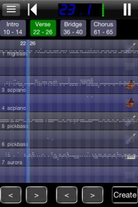
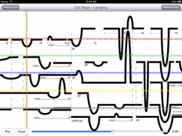
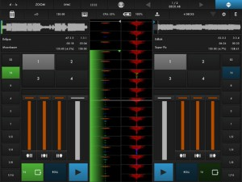
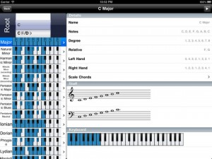
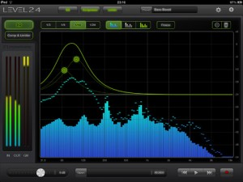
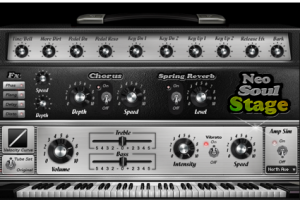
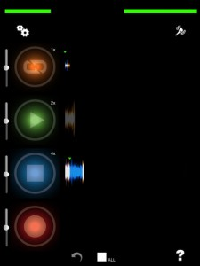
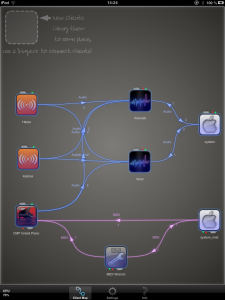
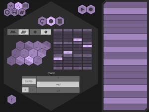
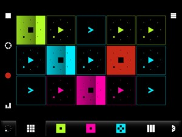

The Midi Loop Station is an app for the performing musician. Easily specify loop boundaries in a midi file and supplement each loop with 16 tracks of your own. All of which can be remote controlled by a midi controller via coremidi. Starting from scratch, gradually build up the sound by playing and adding instruments to amaze your audience.
Features Include:
* Up to 10 loops per midi file
* 16 Audio Tracks per loop (44.1K wav)
* Change tempo, key, mix
* All changes are saved
* Dynamic control of tracks
* Access to 100’s of midi files
* Universal App (iPhone, iPad, iTouch)
* Simple interface
* Playlist support
ScorePlayer allows for network-synchronised scrolling of proportional colour music scores on multiple iPads. This is designed to facilitate the reading of scores featuring predominantly graphic notation in rehearsal and performance.
Key Features:
Comes with four built in scores, created by composers in Decibel new music ensemble, Cat Hope and Lindsay Vickery.
Ability to change scroll speed of the piece.
Easy to use slider to navigate to different sections of the piece for rehearsal purposes.
View full score or individual parts.
Works across any wi-fi connection.
Easy network check to verify which devices are on the network.
Modular structure enables easy updates, with more scores to come. Upload facilities, audio output and OSC communication are planned in future releases.
d(- -)b, the first Modular DJ App for the iPad.
Mаԁе bу thе people behind touchAble, d(- -)b provides endless possibilities for DJs with an iPad. Its modular approach lets the app adapt to the user, not the other way around.
DJs can choose from pre-installed templates or create their own interface with up to 6 decks – on one or several pages – making it the perfect tool for any use-case.
****** IMPORTANT ******
on some devices (especially ipad3) the app can currently crash while loading – an update that fixes this issue has been sent to apple and is waiting for approval at this time – we are very sorry for the incovenience – and would like to thank you for your patience!
******
The comprehensive in app editor makes it simple to configure your very own DJ setup. The numerous modules include everything a DJ needs, and allow for an incredible amount of flexibility and customization.
With beautiful color-coded waveforms instead of fake vinyl platters, and accurate tools for both worlds of beat-matching: Grid & Sync or Pitch & Nudge – it opens the door to a whole new world of touchable DJing.
With support for Multi-Route Audio, d(- -)b turns the iPad into into a professional DJ setup – powerful, customizable, portable.
Introductory Price of $9,99 – get it while it lasts!
Features
+ Zoomable realtime waveforms with spectrum colorcoding
+ 4 cue points per deck
+ 3 band EQ with kill switches
+ loops from 1/64th to 8 bars
+ loop roll while track keeps playing
+ automatic beat & grid detection
+ manually grid tracks if the detection is off
+ pitch coarse & fine faders for 10% / 1% pitch control
+ custom browser with access to the iTunes library
+ record stereo mixes – even without multi-route (optionally listen to the dry/wet monitor signal instead of the recorded main signal)
+ multi-route audio to precue tracks in stereo
-> use any class compilant USB Audio Interface as a secondary stereo output
Piano Companion is a flexible chord/scale dictionary with user libraries and reverse mode. Piano Companion allows you to find a chord or scale by its name. If you don’t remember what’s the name of a chord/scale, it helps you to find it by keys. Piano Companion shows chord/scale notes, degrees, fingering for both hands in major and minor scales. You can listen how a scale or chord sounds. You can see the list of compatible chords in the selected scale. The great advantage of Piano Companion is the fact that it’s a growing application, so we will be glad to consider any new features which helps you to increase usability.
Key features:
✓ 1500+ piano chords, up to 6th inversions
✓ 500+ scales
✓ 12 root keys
✓ Circle of Fifths
✓ List of available chords in Circle of Fifths
✓ Key notations: English, Italian, Japanese, Russian, etc.
✓ Reverse chord & scale lookup
✓ Ability to display chord on the staff
✓ Plays chords
✓ Plays scales
✓ Plays arpeggiated chords
✓ Audio support
✓ Relative scale suggestions
✓ Compatible scale chords
✓ Scale lookup with major & minor scale fingering
✓ Flexible chord & scale search using keyboard
✓ User libraries
✓ Ability to create custom chords for a user library
Level.24 is a pro-quality real-time spectrum analyzer, EQ, Compressor and Limiter. With up to 1/24 octave band analysis precision and 12 parallel parametric equalizers and ultra low latency, Level.24 redefines audio control on the iPad.
Fully Audiobus compatible to receive, process and record sound from other Audiobus apps.
Special introduction price $9.99
Rated *Killer App* by Apps4iDevices
Level.24 helps you get perfect sound. In a live sound situation, a (home) studio or an Audiobus configuration, analyze the incoming audio to find peaks and dips and inspect the overall spectral balance. Shape the sound with up to twelve parametric EQ’s, and adjust the output levels with the Compressor/Limiter to add maximum punch.
Specifications:
• Input: microphone, external hardware, Audiobus.
• Real-time analysis: 3, 6, 12 and 24 bands per octave spectrum analyzer with average and peak display.
• EQ: up to twelve parametric EQ’s in parallel, with adjustable center frequency, gain and Q factor.
• Dynamics: compressor with graphically controllable threshold and ratio, 10 dB soft-knee mode and switchable Automatic Attack and Release. Peak Limiter.
• 32-bit floating point internal signal bus.
• Ultra low latency mode with 1.5 ms delay.
• Recording: uncompressed recording and playback; EQ and dynamics stages can be applied to playback as well.
With the incredible success of our computer based versions of Neo-Soul Keys®, we felt it an obvious decision to bring our incredible electric piano libraries to the iOS. Despite the eagerness, we did not want to produce a sub-par app just for sake of making an electric piano library, so we worked directly with Apple’s engineers to bring to you, for the first time ever: SAMPLE STREAMING USING APPLE LOSSLESS CAF FORMAT. No other app that we know of offers real-time zone switching sample streaming with lossless compression. Many other sample library apps offer the samples to be loaded into memory, which obviously severely cripples the detail and amount of samples you are able to use. With sample streaming, we are able to use the same high quality sampling techniques, zone switching, and velocity layering, without sacrificing the quality similar to a desktop sample library. So what we did was load all of the electric piano effects samples in system memory, and dedicated the most important sustain samples to stream from the internal flash RAM. The results make for a high quality, low latency, and professional grade electric piano sound module that you can take with you and play live!
You see, many sound designers are trained in a certain way of sampling, by making things so tidy and neat. Every sample is perfectly cut, trimmed, and cross-faded to perfection. Unfortunately, this is not real life and it definitely is not what a real electromechanical instrument is suppose to sound like. It is in those uneven notes, blanks, quarks, splats, clanks, and mechanical nuances that really make you fell like you are playing a real living and breathing organic instrument. This is what we intended with Neo-Soul Keys® – a real world feeling and experience of playing a real electromechanical instrument. You even hear the pedal noises when the sustain pedal is being pressed and released. THAT IS HOW MUCH DETAIL WE PUT INTO OUR INSTRUMENTS! As a result, our Neo-Soul Keys® has been featured and licensed by none other than Steinberg®, who are the the inventors and creators of VST technology.
Inspired from hardware looping pedals, TF Looper aims to make looping fun and easy! Great for impromptu jams without the need to “plan” anything in advance. Works standalone or with input devices such as Apogee Jam for better sound.
✓ Low-latency sound engine makes looping a breeze
✓ Straight-forward workflow and interface akin to dedicated hardware loopers
✓ Undo functionality
✓ Trigger recording on input for easier recording of instruments
✓ Automatic quantisation of loops for fuss-free recording
✓ Unlimited overdubbing for expressive looping
✓ Fade previous overdubs option to create a continuous looping soundscape
✓ Octave-down and octave-up on individual channels
✓ Stop tracks anytime, play them again and they will synchronise to other tracks in perfect time
✓ Included limiter and noise reduction
✓ Stop-all channels / Start-all channels function – great for breaking it down!
JACK is more than just one app. It is a system that connects the music and audio world on your iOS device. JACK allows audio channels and MIDI ports of your audio & music apps to be connected with each other. It does not force a predefined schema in which way apps shall be connected with each other. You can freely connect them in any way you want, intuitively like drawing on a paper. Besides audio & MIDI interconnection, JACK provides other very useful mechanisms to let your audio apps work together like never before. For example record/playback synchronization between DAWs and sequencer apps. Arbitrary data sharing among apps and much more. Even though JACK is quite new on iOS, it already came a long way. Providing you the most professional and powerful environment for your audio apps, highly optimized with explicit multi core support, low latency and maturity which it gained over many years of usage and development on other operating systems already. JACK is an open standard, which can freely be supported by anybody.
Current Features:
– Audio connections between apps and external devices¹.
– MIDI connections between apps and external devices¹.
– Record/Playback synchronization between apps.
– Multi Core CPU support for high performance (parallelized internal audio graph).
– Low Latency Performance (configurable, i.e. 2ms buffer sizes).
– Arbitrary, custom data sharing among apps (allows easy extensions of the system).
– Arbitrary amount of audio & MIDI ports per app, changeable at runtime.
– Intuitive user interface that allows you to easily manage all audio and MIDI connections, environment settings, monitor current overall CPU usage and more …
Chordion is a new way to make music on the iPad. Choose chords with one hand and play melodies with the other – never hit a wrong note! Chordion is great for performing, writing songs, jamming, or having sing-alongs with friends.
Chordion makes it easy to play common chord changes in any key. In “auto” mode, Chordion’s keyboard follows the chords you play, letting you strum up and down or pluck out melodies. Chordion includes a built-in drum machine & arpeggiator for keeping the beat.
More experienced users will love the wide range of customization options – from the layout of chords to synthesis parameters to exotic scales.
Chordion’s built-in synth engine is highly tweekable and easy to use – create organy drones, echo-y lead lines, or shimmery chimes.
Chordion also supports MIDI, allowing you to play other instruments using Chordion’s unique interface. The chord buttons and keyboard can even be set to different MIDI ports and channels so you can control two instruments at once!
Protein Der Klang is a fresh audio sampler fit for public performances.
Play, record and manipulate your audio samples on stage or in your bed using an intuitive multi-touch musical application.
Features:
– Play with 12 simultaneous samples on the 3 coloured tracks.
– Scratch, revert, slice, pause, fade & resync up to 4 clips on each track.
– Play with an effect on each track & a master effect.
– 5 sound effects: Crusher, Repeater, Delay, Phaser, LP Filter.
– Import and export your samples and patches using iTunes Sharing.
– Record live loops from audio-input and internal mixer.
– Exclusive playback resync feature.
– BPM-synced clip trigger and playback & metronome.
– Smart controls for faster actions.
– Low latency audio engine.
– 4 fresh demo patches.
– 140+ audio samples included.
– Support for 16bit wav samples.
– Embedded user manual and feedback.
Thanks for dropping by ProMusicApps. Whether you're a dedicated app developer, or devoted app users like us, we hope you find what you're after. Ping us via the Contact Page if you want to touch base.


{kind=link}
{kind=link}
{kind=link}
{kind=link}
{kind=link}
{kind=link}
{kind=link}
{kind=link}
{kind=link}
{kind=link}
{kind=link}
{kind=link}
{kind=link}